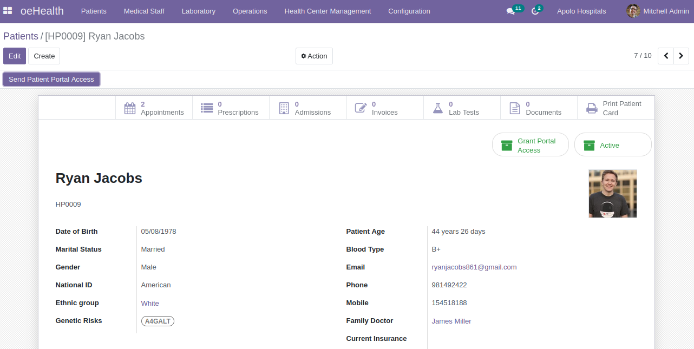
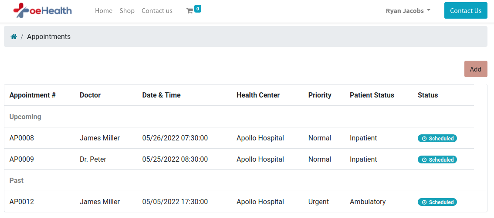
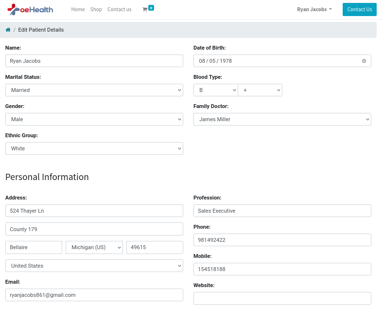
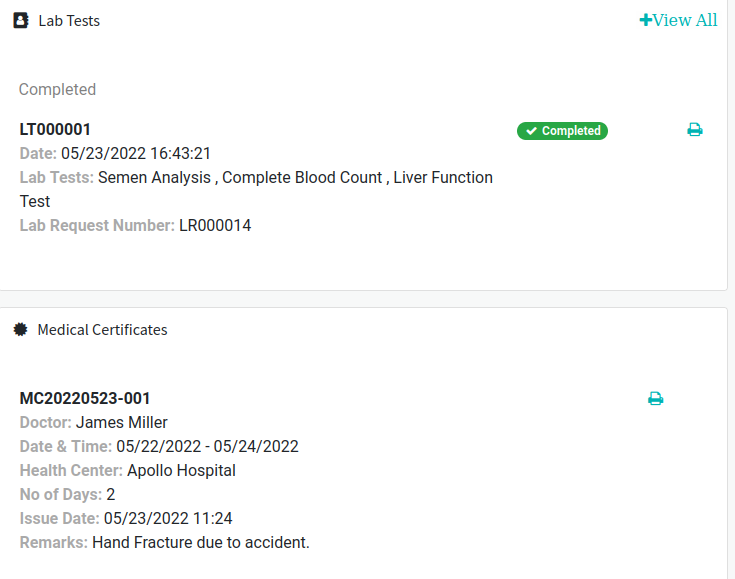

Access to Personal Health Information
With the help of patient portal, patients can have access to their personal health information such as evaluations, socioeconomics, lifestyle, medical history, family members.

An online platform for patients to have complete access to their personal health information and medical records such as appointment details, test results, medical histories & treatments and so on anytime and anywhere with the use of an internet connection.
Hospital Admin can provide patient portal access to specific patient.
Access can be granted and revoked with the help of “smart button”.

With the help of patient portal, patients can have access to their personal health information such as evaluations, socioeconomics, lifestyle, medical history, family members.
Using patient portal, patients can schedule appointment with the respective doctor for further medical consultation.

Patients can also update their personal information and also add Emergency Contact.

Patients can have an access to their lab related queries such as lab requests & lab tests.
Medical Certificates can be viewed as well as downloaded by patients for their further office, academic or insurance claiming related needs.
